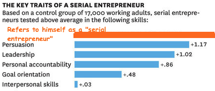

- student: DBC
- mkt mgr + product liaison: TRLA
- timcannady@gmail.com
- twitter.com/tcannadysf
- linked.com/in/timcannady
- github.com/timcannady
Culture
The Technological Land Grab
Websites have become surprisingly easy to build. The majority of humans are now online, and they can be reached with decreasing effort. Bootstrapping is sexy, funding is plenty and mobile boomed. Consequentially it's easier than ever to start a web-based company, and one of the side-effects appears to be a technological land grab.
I suppose there's nothing inherently wrong with a land grab - the idea that saying "I own a startup" is as generic as saying "I like steak." I'm all for the spirit of change, entrepreneurship, disruption and progress. But I can't help but feel a respectable portion of the boom is fueled by companies land grabbing for land grabbing-sake. Technological posers, of sort. And I don't really have any issues with posers either. It just seems that some of these companies could benefit from a look back at fundamental business practices.
So what's a "bonifide startup"? A company with a website? With an app? A responsive website? Founded by Stanford grads? Funded by Sand Hill? Funded by grandma? Built in San Francisco? I don't have the answers. But I think a start would be to have a sound, old-fashioned business plan. One that sizes a market, describes the (realistic) opportunity, analyzes the competition and all those other things taught in business school (that educational system that pre-dated MOOCs).
I used to work for Trulia, a real estate startup. At one time Trulia was the disruptor. During my tenure it grew about 10x (200 - 1,500 employees), quadrupled its UV's (~14m - ~60m), went public on the NYSE and was finally purchased by sworn enemy Zillow. I'm not sure if or when Trulia was no longer a startup. But if so, perhaps it was around the time when other disruptors entered the space. Some were successful and some fizzled out. The ones that succeeded typically had a business plan, among other things like smart founders, a great product and solid sales team. But the ones that fizzled out typically had something in common: they seemed to all be pet-projects of sorts. Again, nothing wrong with a pet project.
The observations at Trulia are just one example. The technological landgrab is prevalent: Will.i.am is a coder, HBO has the hit series Silicon Valley, "serial entrepreneur" is the new "CEO", and satirical websites like this almost seem real.

Pops said an observation without a fix is just a complaint, so here's some ideas. Do as you wish with your time and money (and try to do good by other people's time and money, too). But if you want to start a business, then start a business. I'd argue that a website isn't a business. Spending time on something doesn't make it a business. Sizing a market and saying "all we need is 3% to get rich" isn't a sound business plan. And save the C-level titles for companies with board members.
Want to make a business that's going to change the world? Or at least grab a significant portion of the market? Kudos to you, that's awesome. I think the best first step would be to Google "how to build a business," instead of "how to build a website." The prior is the end, and the latter is simply a means!